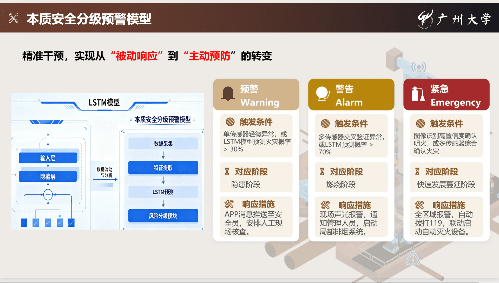

本质安全理念
火源 — 可燃物 — 人员 三者空间分离，从源头消除火灾发生的必要条件。 AI 实时识别区域重叠，确保施工现场安全布局。
AI 识别区域
动火作业区
已识别
可燃材料堆放区
已识别
人员通行区
已识别
疏散通道
已识别
一般施工区
已识别
临时办公/休息区
已识别
冲突检测结果
点击"开始演示扫描"启动检测
三级冲突反馈
轻度冲突（黄灯提示）
中度冲突（橙色告警）
严重冲突（红灯锁定）
实时视频监控 — 风险隔离检测
监控中
动火审批信息
宏福苑城市更新项目
作业位置
A区外墙 6F
作业类型
电焊作业
作业人员
张伟 (焊工证 #2024-0892)
监护人员
王强 (安全员)
作业时间
10:00 — 16:00
灭火器配置
ABC干粉 x2
开工前安全检查
周边可燃物是否清除
灭火器是否到位
监护人是否在岗
疏散通道是否畅通
作业区域是否已隔离
检查进度
0/5 已完成
动火作业监控 — 过程控制
监控中

多传感器融合监测
配电箱温度传感器
当前: 42.3°C
点击查看详情 >
烟火检测传感器 VFDS
多光谱分析: 正常
点击查看详情 >
进吸式烟雾探测系统 ASD
激光散射: 0.02%/m
点击查看详情 >
LSTM 预警分级
基于 LSTM 火灾风险预测模型
预警 (Warning)
单传感器异常 / LSTM > 30%
--
警告 (Alarm)
多传感器交叉异常 / LSTM > 70%
--
紧急 (Emergency)
确认火灾 / LSTM > 90%
--
实时传感器监测 — 隐患预警
正常

动火结束闭环流程
作业结束后的完整处置闭环
作业结束确认
余火检查
高温复检
30min后复检
30:00
二次巡查
复查照片上传
闭环流程会在同一屏内完成展示